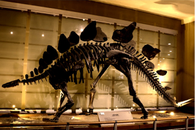

본문콘텐츠영역
EXHIBITION

-
- 중앙홀
- 서대문 자연사 박물관의 중앙홀은 자연의 아름다움과 다양성을 만날 수 있는 공간입니다
- 더보기
-
- 자연관
- 서대문 자연사 박물관은 인간과 자연의 긴밀한 관계를 탐구하는 탐구 할 수 있는 곳입니다
- 더보기
-
- 진화관
- 과학적으로 구성된 전시물을 통해 생물의 기원과 다양한 종의 진화 과정을 보여줍니다
- 더보기
-
- 환경관
- 자연사 박물관의 지구환경관은 환경 보전과 지구 생태계에 대한 인식을 높이는 곳입니다
- 더보기
EVENT
서대문 자연사 박물관만의 특별한 이벤트에 참여해보세요
-
- Educational program
- 유치부, 초등학생을 대상으로 지연현상의 원리를 쉽게 이해할 수 있도록 꾸며진 강좌를 개설하고 있습니다.
-
- 기획전시/특별전시
- '동물 행동'을 통해 발견하는 근원적 가치와 목적의 의미를 담은 '애니멀 액션'을 전시 하고있습니다
-
- Digital museum
- 유치부, 초등학생을 대상으로 지연현상의 원리를 쉽게 이해할 수 있도록 꾸며진 강좌를 개설하고 있습니다.
박물관 소개
서대문 자연사 박물관은 어떤 곳인가요?
-
- 서대문 자연사 박물관은
- 대한민국의 생명을 탐구할 수 있는 중요한 장소입니다.
-
- 서대문구의 박물관
- 서대문구에서 만든 최초의 지자체 박물관입니다
-
- 생물의 역사를 만나다
- 서대문 자연사박물관에서 지구의 역사를 배워보세요
-
- 다양한 표본들
- 세계의 다양한 표본을 수집 전시하고있습니다
-
- 교육의 장소입니다
- 교육의 현장이 살아있는 서대문자연사박물관으로